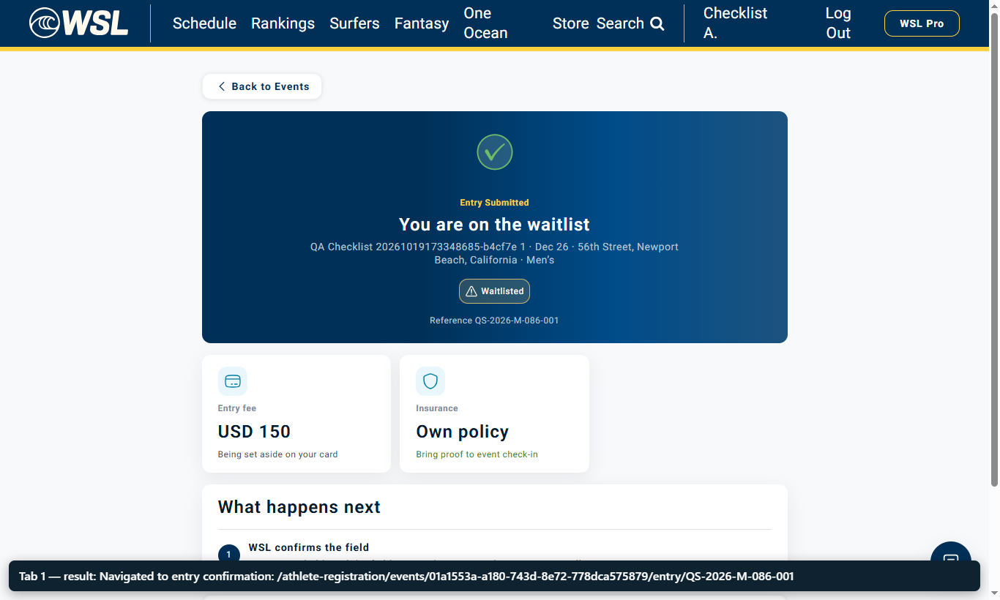
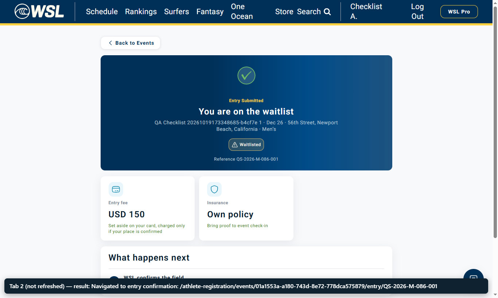

WSL-9580 · Same event registered twice from two open tabs
Recorded on dev, 19 Oct 2026 · Event 01a1553a-a180-743d-8e72-778dca575879 · Entry 01a1553b-82cd-77cb-a983-5bb808dc0d0c (QS-2026-M-086-001) · Jira WSL-9580
The same athlete account is signed in on two tabs, both on the registration form for the same event. Tab 1 submits. Tab 2 is not refreshed: it still shows the form with Submit enabled, and its submit is accepted with a normal confirmation for the same entry. The backend answers both requests with 201 Created.
Tab 1 — registers first

Tab 2 — not refreshed, submits again

| Request | Time (UTC) | Response |
|---|---|---|
Tab 1 POST /api/entries | 17:35:26 | 201 Created — entry 01a1553b…, ref QS-2026-M-086-001, charge "requested" |
Tab 2 POST /api/entries (same event and athlete) | 17:36:07 | 201 Created — same entry and reference, charge "agreed" |
| Tour Manager roster | after both | One entry for the athlete (Waitlisted, Authorized); one charge record of USD 150; one saved card |
Full request log for both tabs: api-log.json (paths, status codes and entry responses; no credentials or cookies). Each video has a caption bar naming the step.